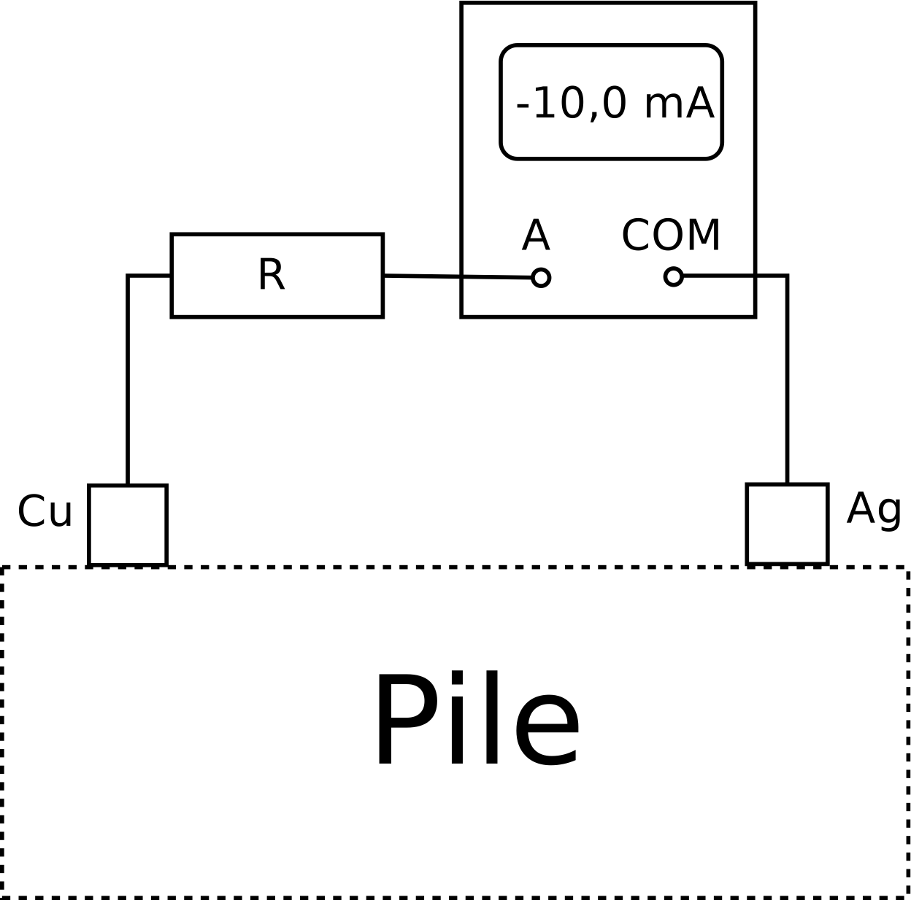

L’objectif de cet exercice est l’étude de la pile cuivre – argent, réalisé à l’aide de solutions de nitrate d’argent $(\ce{Ag+ (aq) + NO3^- (aq)})$ et de sulfate de cuivre $(\ce{Cu^{2+} (aq) + SO4^{2-} (aq)})$.
Données
-
Faraday : $1 {\cal F} = \pu{96,5e3 C.mol-1}$ ;
-
Masses molaires : $M(\ce{Cu}) = \pu{63,5 g.mol-1}$ ; $M(\ce{Ag}) = \pu{108,0 g.mol-1}$ ;
-
$C^o = \pu{1,0 mol.L-1}$.
Étude descriptive de la pile
Afin de déterminer expérimentalement le pôle positif de la pile, on branche en série une résistance $R$ et un ampèremètre.
-
Reprendre le schéma de la pile sur sa feuille en remplaçant la zone intérieure en pointillés par un schéma annoté de la pile faisant intervenir deux demi-piles ($\ce{Ag+/Ag}$, $\ce{Cu^{2+}/Cu}$) et un pont salin.
-
Quel est le rôle du pont salin dans le dispositif ?
-
Déterminer, à l’aide de la figure l’armature qui constitue le pôle positif de la pile.
Pile et réaction chimique
-
À partir de la réponse à la question précédente déterminer la nature et le mouvement des porteurs de charge électrique dans les fils, dans les solutions aqueuses et dans le pont salin.
-
En déduire le type de réaction chimique intervenant au niveau de chaque électrode.
-
Écrire les équations électroniques des réactions chimiques se déroulant dans chaque demi-pile.
-
Vérifier que l’équation de la réaction est : $$ \ce{ Cu (s) + 2 Ag+ (aq) <=> Cu^{2+} (aq) + 2 Ag (aq)} $$
La constante d’équilibre $K$ de cette réaction vaut $K = \pu{2e15}$.
-
Donner la définition du quotient réaction $Q_{r}$ (pour un état quelconque du système chimique) de la réaction précédente.
-
On utilise, pour réaliser cette pile, des solutions de nitrate d’argent et de sulfate de cuivre de même concentration $C = \pu{0,10 mol.L-1}$. Quelle est la valeur initiale $Q_{r,i}$ du quotient de réaction ? En déduire le sens d’évolution spontanée du système.
-
Retrouve-t-on, à l’issu de la question précédente, la même position du pôle positif qu’à la question 3. ?
Pile et électricité
La pile débite un courant électrique d’intensité $\pu{10,0 mA}$ (supposée constante) durant $\pu{1,00 h}$.
-
Quelle charge électrique a circulé dans les fil pendant l’expérience ?
-
Calculer les variations des quantités de matière de $\ce{Cu}$ et de $\ce{Ag}$ lors de cette expérience.
-
En déduire les variations de masse correspondantes.